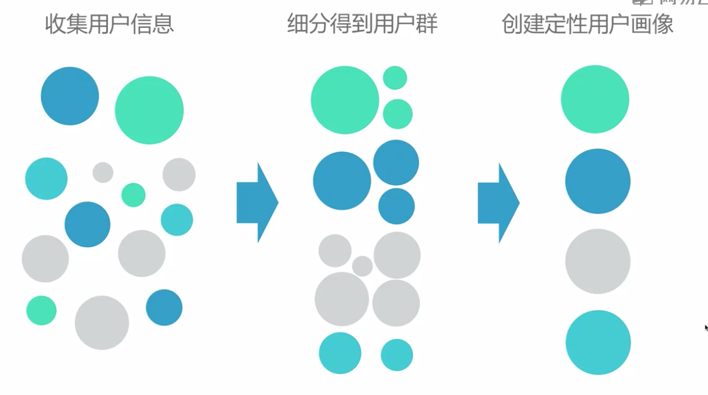

用户分群与追踪研究
一、用户分群与追踪
A.用户画像概要
1.不同产品，用来描述用户的角度有所不同，即用户画像的内容纬度会有所不同
2.用户画像，通过用户（产品目标群体）的目标、行为、观点、基本信息等，对其真实特征进行勾勒，一般会得到3-6个画像/人物角色（Persona）；每个画像是一个原型，代表一群真实的用户
3.原型：从真实用户中抽离出来的一个类型
4.用户画像方法
- 1）定性画像
- 定性研究方法做的定性画像
- 经定量研究方法检验的定性画像
- 2）定量画像
- 定性研究方法
- 定量研究方法
5.选择什么方法，做怎样的用户画像？“看具体情况”：
- 1）用户画像的受众是谁？设计师？产品经理？
- 2）希望用户画像结果来支持什么类型的决定
- 3）打算花多少时间和钱
6.一般来说，应该在产品规划阶段创建，越早越好
- 越早创建，越能起到指导作用，减少分歧，避免走弯路
- 关注目标用户他们需要什么、想做什么，描述其典型目标和行为特点
7.任何阶段都可以，都有用：假如产品规划阶段没有做用户画像，难道就“一错再错”？一开始没有做，没关系，latter better than never；无论什么时候做用户画像，都能对这之后的产品路线和设计工作做重要参考
8.不断迭代更新：随着产品的发展和变化，用户也在变化；一成不变的人物角色会“过期”、“老化”，需要及时更新
B.定性用户画像
1.步骤

2.收集用户信息
- 1）从哪里入手去收集信息

- 2）找哪些用户参与调研？为了能让最终结果覆盖到产品所有的细分目标用户，需要尽可能和最大范围内的不同用户接触
- 3）怎么选择用户


- 4）找用户渠道

- 5）通常收集哪些信息

- 6）怎么收集：方法

- 7）日志法示例

- 8）具体做法

- 9）收集成果

3.细分得到用户群
- 1）找到用户细分的纬度
- 找准用户细分的标准，是用户画像最难最核心的工作
- “是科学也是艺术”
- 建议从“目标、观点和行为”这些纬度入手。
- 一般来说，完成信息收集工作后，已粗略知道划分纬度
- 2）资料整理的方法
- 亲和图法：根据相关性，对定性资料进行归纳整理，将信息可视化

- 3）用户细分的实用工具

- 4）从基础信息中提取出各纬度间关系

- 5）检验细分纬度：用户细分“是科学也是艺术”
- 这些细分群体能否解释已知的关键差异？
- 这些细分群体的区分度怎么样？
- 这些细分群体像真实的用户吗？能马上描述出他们的特点吗？
- 这些细分群体覆盖全部用户了吗？
- 这些细分群体将如何影响决策？
- 6）用户细分结果

- 7）迭代与探索

4.创建定性用户画像
- 1）从细分群体到用户画像

- 2）提炼典型用户画像

- 3）模块1，列表式信息

- 4）模块2，场景

- 5）确定人物角色优先级

5.总结

6.拓展

C.定量用户画像
1.步骤

2.形成细分假设
- 1）收集用户信息：汇总已知的用户信息，建立精略印象（心中有谱，方便后面开展工作，如果对用户情况比较了解，这一步可以省略）
- 2）在了解用户的基础上，形成细分假设

- 3）假设指导定量数据收集过程

3.收集定量数据
- 1）怎么收集定量数据

- 2）渠道优劣对比

- 3）综合两个渠道

- 4）怎么处理数据

4.用户聚类
- 1）工具

- 2）步骤

- 3）选择有价值的变量
- 结合业务逻辑选择变量
- 排除高相关变量：直接判断。满意度和推荐意愿之间高度相关，选择其一；因子分析。视因子分析结果直接聚类，或提取公共因子后再聚类
- 4）因子分析的意义

- 5）聚类方法


- 6）效果评估


- 7）确定用户分群结果：得到恰当的用户分群结果后，根据用户类型，得到每类用户在各个指标上的值

6.创建定量用户画像
- 1）创建方法

- 2）定量用户画像的优势
- 与定性用户画像相比，定量画像接触用户更多，综合了更多用户信息
- 有统计方法论做保障，更客观
- 更容易判断各用户群的重要性和优先级
- 3）定量用户画像的要求
- 需要有定量数据：公司是否重视记录用户数据这件事？是否有准备、完备的后台数据？
- 大量资源投入：时间、人力、金钱…
D.用户画像的应用价值
1.用户画像的应用价值
- 1）有效用户画像的应用前提
- 基于调查研究而不是随性发挥
- 每个用户画像能代表所关注的真实用户
- 人物角色的属性和描述是准确而完整的
- 这一组用户画像能涵盖所有应该关注的用户
- 2）用户画像价值概要：带来专注与效率
- 专注：一般来说成功的商业模式通常针对特定群体，用户画像迫使团队把注意力集中在目标用户上，专注为这些人提供产品或服务
- 共鸣：帮助团队成员从目标用户的角度考虑问题，而不是“我认为…”、“我觉得…”，这能促成团队意见统一
- 创造效率：用户画像确保团队更早做出重要决定，而不是在设计评审会上争论“我们正在为谁设计”或“我们应该有什么样的功能”，这能避免浪费时间与金钱
- 3）用户画像价值概述

- 4）商业策略阶段

- 5）洞察需求阶段

- 6）功能阶段

- 7）设计阶段：指导设计

- 8）测试和评估阶段

- 9）运营推广阶段

2.以用户画像为衡量体系
- 1）用户画像与业务KPI的关系

- 2）如何使用用户画像建衡量体系

E.用户追踪研究
1.用户追踪研究：由点到线，追踪用户变化
- 1）了解产品带来的用户变化

- 2）了解运营带来的用户变化

- 3）了解竞品带来的用户变化

- 4）已有结果价值最大化
- 把已有调研结果作为追踪研究的基线，让已有结果价值最大化
- 追踪研究不止于结果，通过原因来分析推理出预期变化，指导之后的工作
2.追踪对象不同方法不同
- 1）区分不同的追踪对象

- 2）追踪群体的方法及案例

- 3）追踪个体的方法及案例


3.经验结论
- 1）大胆假设小心求证

- 2）小结

二、关注特别的用户
A.高价值用户研究
1.为什么要关注高价值用户
- 1）用户间有矛盾

- 2）资源限制需要有所侧重

- 3）获取用户成本限制

- 4）战略规划

- 5）主动关注：积极主动
2.怎么确定高价值用户
- 1）高价值用户：对产品（商业）成功起关键作用的用户
- 2）研究关键：界定高价值用户？什么是高价值用户？（操作定义）

- 3）分析框架：定性

- 4）分析框架：量化（电商 ）

3.几种常见产品的高价值用户
- 1）社交类产品

- 熟人-易信分析：


- 陌生人-花田


- 内容社交-Loft


- 2）工具类产品

- 3）电商类产品


- 4）To B类产品：产品对象包含客户（企业或团队整体），和普通用户（产品使用者）

4.小结

5.高价值用户基本研究思路

B.流失用户研究
1.流失研究的价值
- 1）用户获取成本高：获取新用户要花钱，还贵！
- 2）流失研究的目的

- 3）判断是否要做流失用户研究

2.怎么设计研究方案
- 1）数据分析，了解概况


- 2）流失原因假设与验证

3.探索未知原因
- 1）没有数据，或没能做数据分析，也可以直接通过用户调研找流失原因。但是情况可能更复杂一些
4.设计调研方案-界定调研对象
- 1）谁是流失用户？“一段时间内没有关键操作行为的用户”
- 2）关键行为，未进行操作的时间长度

- 3）拐点法


- 4）调研方法


- 5）调研执行

3.怎么应对流失研究的特殊性
- 1）心理压力过大怎么办：自我减压
- 2）沟通难度大怎么办


- 3）工作量太大怎么办

4.怎么让结果落地
- 1）找到流失原因

- 2）评估严重程度


- 3）怎么防止用户继续流失


- 4）召回：评估


5.小结

C.进阶：流失预警模型
1.流失模型的基本原理

2.模型的价值
- 1）提前预测用户流失


- 2）提前对用户群质量做评估


- 3）了解产品功能对流失的影响

- 4）运营

2.整体流程
- 1）需要具备的知识

- 2）一些基本概念

- 3）建模阶段


- 4）流程图

- 5）数据摸底：作为很重要的准备工作，目的在于整体把握数据情况，这个过程经常需要和业务方一起探讨，借助业务方的经验以输出可靠的结论。摸底的结论将会直接影响建模的效果。

- 6）自变量初选

- 7）自变量确定

- 8）因变量确定


- 9）训练集

- 10）训练集的提取和数据转换

- 11）数据转换

- 12）LOG10变换

3.建立模型
- 1）逻辑回归算法


- 2）常用建模工具


- 3）建立模型

4.模型的评估和使用
- 1）评估指标

- 2）效果评估：评估集


- 3）模型使用


5.小结

三、满意度追踪体系
A.用户满意度调研
1.满意度调研：即通过问卷等方式，收集大量用户在产品的各项满意度测量指标下的态度水平。进而为产品优化改进提供定量数据参考

- 1）满意度研究的价值

2.制定研究方案
- 1）满意度指标体系是一种人为制定的产品满意度结构
- 2）建立满意度指标


- 3）三个原则

- 4）问卷投放

- 5）样本说明

- 6）项目周期

3.满意度问卷构成
- 1）构成

- 2）使用目的、行为和获知渠道

- 3）满意度、忠诚度度量


- 4）用户基本信息

4.问卷数据分析
- 1）描述分析


- 2）交叉分析


- 3）进阶：结构方程


B.用户满意度追踪体系
1.满意度追踪的价值


2.满意度追踪的时机

3.满意度追踪的原则

4.满意度追踪数据分析


C.用户反馈与舆情追踪
1.用户反馈的价值

2.舆情追踪的价值

3.用户反馈和舆情数据的特点

4.如何获取用户反馈

5.追踪舆情的渠道

6.两类分析方法

7.反馈和舆情分析


8.分词和词频统计

9.语义网络分析


10.回归原始文本

11.结果呈现（文字方式）

12.结果呈现（词云）

四、用户反馈与舆情追踪
A.留置研究
1.留置研究中的“留置”，是指把研究中需使用的材料 （如问卷、产品、日记卡等）交给用户一段时间，由用户完成体验任务后，研究者再将相关材料 取回的这段过程
2.这一段“留置”过程，是留置研究与其他研究方法最大的不同
3.留置研究的优势

4.留置研究的应用场景

5.怎么做：构建方案
- 1）研究思路

- 2）流程与时间

- 3）用户招募方案

- 4）留置材料

6.怎么做：执行研究
- 1）任务沟通与确认

- 2）质量监控


- 3）研究素材回收

- 4）焦点小组执行

7.结果应用
- 1）资料整理方法

- 2）研究结果（1）：不同用户的不同使用场景与主要需求
- 3）研究结果（2）：初始触点、新使用场景、长期体验后的真实感受
8.应用：拓展研究
9.方法拓展

B.留置研究的延续
1.获得真实信息
- 1）霍桑效应

- 2）霍桑效应（Hawthorne Effect）：是心理学上的一种实验者效应，指当被观察者知道自己成为被观察对象，而改变行为倾向的反应
- 3）行为数据追踪

- 4）留置期追踪：留置研究正式开始前，和用户约定好ID（为了能在后台识别出谁是谁）；通过埋点记录用户的行为，对行为数据进行追踪和分析

5）留置后追踪

2.量化产品优化效果
- 1）头脑风暴产生解决方案：产品团队所有人员进行，把所有收集到的问题和需求快速转化为可以落地的思路
- 2）概念设计：根据头脑风暴梳理的解决方案，设计师进行新一轮概念设计，产出N套概念
- 3）概念评估：这N套概念哪个更理想，以过概念评估环节，用户侧信息可以验证一些之前没有考虑清楚的问题，也为解决方案的可行性提供用户侧的参照
- 4）新版本体验评估：新版发布，执行用户满意度调研，改版优化的效果逐步被量化，用户满意度、净推荐值（NPS）、继续使用意愿